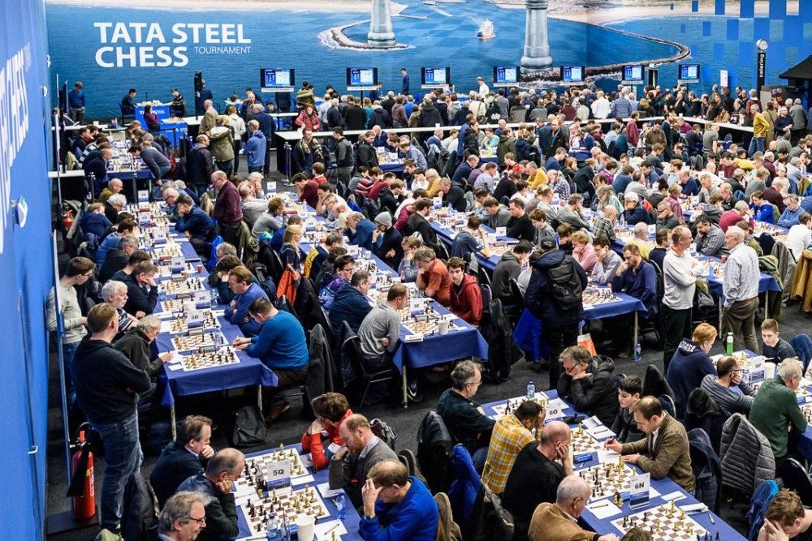

Benefits of Chess
Chess is more than just a game; it's a mind-enhancing activity with numerous cognitive and educational advantages. In this section, we explore how playing chess can sharpen your critical thinking skills and improve your concentration.
Cognitive and Educational Advantages :
Chess is renowned for its ability to stimulate cognitive functions and enhance educational outcomes. By engaging in this age-old game, individuals can experience a range of intellectual benefits.
Enhanced Critical Thinking :
One of the standout advantages of playing chess is the sharpening of critical thinking skills. Chess requires players to think several moves ahead, anticipating their opponent's responses and strategizing accordingly. This foresight and planning enhance problem-solving abilities, a skill that extends far beyond the chessboard. As you make decisions in the game, you develop the capacity to analyze complex situations and make informed choices—a valuable skill in various aspects of life.
Improved Concentration :
Chess demands unwavering concentration throughout a game. Players must pay close attention to the board, considering every possible move and countermove. This intense focus not only improves concentration during gameplay but also translates to better attention spans in everyday activities. Whether you're studying, working, or simply engaged in a task, the concentration honed through chess can help you stay on track and maintain mental clarity.
Connecting with the Chess Community :
Beyond its cognitive and educational advantages, chess serves as a bridge to a vibrant and welcoming community. Engaging in chess opens doors to meeting fellow enthusiasts, both online and in person. Tournaments, clubs, and online chess platforms provide ample opportunities to connect with like-minded individuals who share your passion for this classic game. The chess community is diverse, and by becoming a part of it, you can build lasting friendships, exchange knowledge, and grow together in the world of chess.
Incorporating chess into your routine can lead to tangible improvements in critical thinking and concentration, skills that have a lasting impact on your cognitive abilities. These benefits extend beyond the chessboard, enhancing your overall cognitive and educational development.
